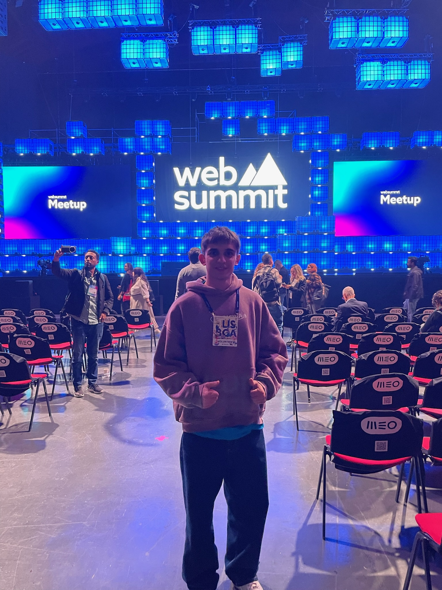
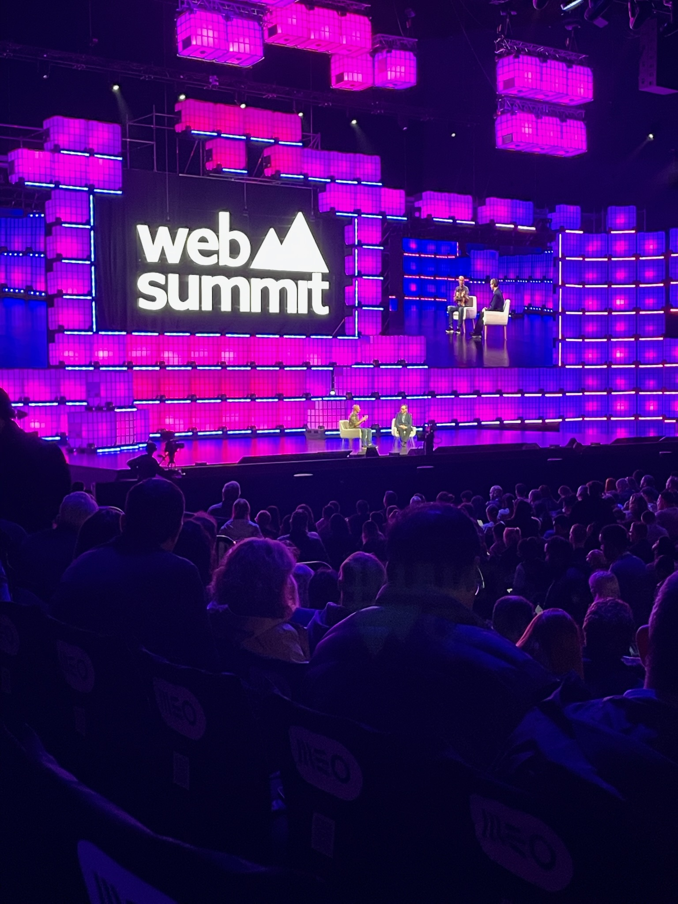
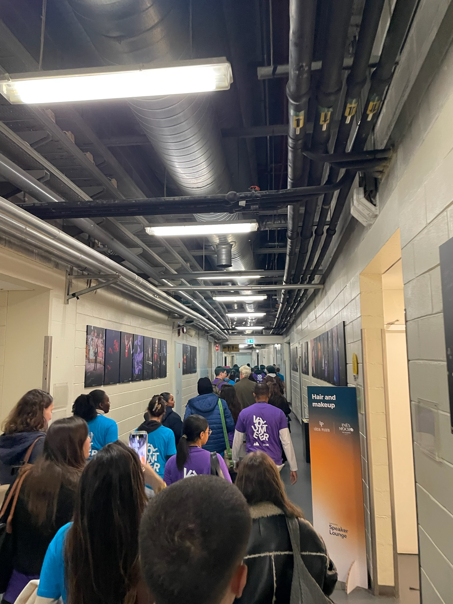

Descrição
Participei como voluntário no Web Summit oferecendo apoio logístico, orientação a participantes e colaboração na organização do evento. Foi uma experiência que reforçou a minha capacidade de trabalhar em equipa, lidar com o público e conhecer de perto um ambiente de inovação tecnológica.
Competências desenvolvidas
Organização
Apoio logístico
Colaboração em tarefas de apoio ao evento, mantendo atenção a horários, espaços e necessidades dos participantes.
Comunicação
Contacto com público
Orientação de participantes num ambiente internacional, exigindo clareza, disponibilidade e adaptação.
Tecnologia
Ambiente de inovação
Contacto direto com empresas, conferências e projetos ligados à tecnologia e ao empreendedorismo.
Fotografias


